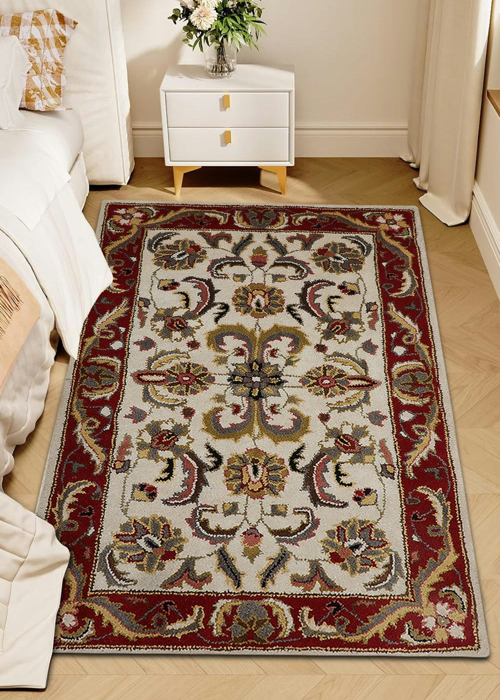

Esperienza autentica
Quarant’anni di attività specializzata
Tappeti persiani a Milano · Showroom fisico
Tappeti persiani e orientali a Milano
Scelti con cura. Seguiti nel tempo.
Vendita di tappeti persiani e orientali, consulenza personale, lavaggio, restauro e noleggio. Dal 1985 vi accogliamo nel nostro showroom di Cinisello Balsamo, vicino Milano.
Piazza Antonio Gramsci 2, Cinisello Balsamo
Lunedì–Sabato 09:00–19:00 · Domenica su appuntamento

1985
esperienza e cultura del tappeto
Showroom fisico
A Cinisello Balsamo, vicino Milano
Servizi completi
Vendita, lavaggio, restauro e noleggio
Assistenza diretta
Consulenza personale, senza call center
Vendita e consulenza
Il tappeto giusto si sceglie nello spazio reale.
Tappeti persiani e orientali a Cinisello Balsamo.
Materia, luce e proporzioni cambiano tutto. In showroom potete vedere i tappeti dal vivo, confrontare colori e misure e ricevere un consiglio costruito sulla vostra casa.
La selezione comprende tappeti annodati a mano, lana e seta, kilim, pezzi vintage, proposte classiche e collezioni contemporanee.
Servizi specializzati
Ogni tappeto merita attenzione, competenza e tempo.
Dalla manutenzione ordinaria agli interventi più delicati: una valutazione chiara, un referente diretto e un lavoro rispettoso della manifattura.
01 / CURA
Lavaggio tappeti
Un trattamento calibrato su fibre, colori e manifattura, con ritiro e riconsegna concordati nell’area di Milano.
Scopri il servizio
02 / MAESTRIA
Riparazione e restauro
Interventi su frange, bordi, trama e vello definiti dopo un esame diretto dello stato e del valore del tappeto.
Scopri il servizio
03 / PROGETTI
Noleggio tappeti
Selezioni su misura per eventi, set fotografici, produzioni, showroom e allestimenti professionali.
Scopri il servizio
Tappeto Online by Irana
Lo showroom continua online.
Esplorate una selezione di tappeti con filtri, fotografie e schede dedicate. Se avete dubbi su misura, colore o inserimento nello spazio, restiamo a disposizione.
- Persiani e orientali
- Classici e moderni
- Lana e seta
- Kilim e vintage

Perché Irana
Competenza che si vede. Fiducia che resta.
Anni di esperienza
Attività specializzata dal 1985, con una conoscenza costruita tappeto dopo tappeto.
Consulenza personale
Un confronto diretto con chi seleziona, valuta e conosce ogni pezzo.
Scelta e cura
Vendita, lavaggio, restauro e noleggio dentro un unico rapporto di fiducia.

Dal 1985, vicino Milano
Conoscere un tappeto significa saperlo ascoltare.
Irana nasce da una passione diventata mestiere e da un rapporto diretto con chi entra in showroom. Ogni tappeto porta con sé un’origine, una tecnica, un tempo e un modo diverso di abitare lo spazio.
La tecnologia rende il catalogo accessibile. La parte decisiva resta umana: riconoscere i materiali, valutare lo stato e consigliare senza forzare la scelta.
Dott. Ali Haghpanah
Fondatore e titolare di Irana Tappeti
Vieni in showroom
Come lavoriamo
Una richiesta chiara. Quattro passaggi.
Il percorso cambia in base al servizio, ma resta sempre comprensibile prima di iniziare.
Contatto
Ci raccontate ciò che cercate o il servizio di cui avete bisogno.
Valutazione
Esaminiamo fotografie, misure e condizioni; quando serve, fissiamo una verifica diretta.
Proposta
Ricevete un consiglio o un preventivo chiaro, con tempi e lavorazione previsti.
Consegna
Concordiamo acquisto, ritiro o restituzione mantenendo un contatto personale.
Domande frequenti
Prima della visita o del servizio.
Risposte dirette alle domande più comuni su showroom, acquisto e cura del tappeto.
Dove si trova lo showroom Irana Tappeti?
Siamo in Piazza Antonio Gramsci 2 a Cinisello Balsamo, facilmente raggiungibile da Milano e dai comuni dell’area nord.
Posso vedere i tappeti dal vivo prima di acquistare?
Sì. In showroom potete osservare colori, materiali e proporzioni reali, confrontare più tappeti e ricevere una consulenza personale.
Il catalogo online contiene gli stessi tappeti dello showroom?
Tappeto.online raccoglie una parte ampia della selezione. Per verificare la disponibilità di un pezzo specifico, contattateci prima della visita.
Come viene calcolato il costo del lavaggio?
Il costo dipende da misure, materiale, tecnica e condizioni del tappeto. Una prima valutazione può essere fatta da fotografie e dimensioni.
Riparate frange, bordi e parti consumate?
Sì. Valutiamo frange, bordi, trama, vello e zone danneggiate, proponendo un intervento coerente con lo stato e il valore del tappeto.
È disponibile il ritiro e la consegna?
Sì. Per lavaggio e restauro possiamo concordare ritiro e riconsegna in base alla zona e al tipo di intervento.
Noleggiate tappeti per eventi e produzioni?
Sì. Prepariamo selezioni per eventi, cinema, fotografia, showroom, set e allestimenti professionali.
Contatti e showroom
Apri su Google Maps
Raccontateci cosa vi serve.
Per scegliere un tappeto, richiedere un lavaggio, valutare un restauro o organizzare un noleggio. Vi risponde direttamente il nostro showroom.
Telefono e WhatsApp
02 660 13 100
338 649 0517
Orari
Lunedì–Sabato 09:00–19:00 · Domenica su appuntamento